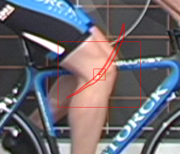
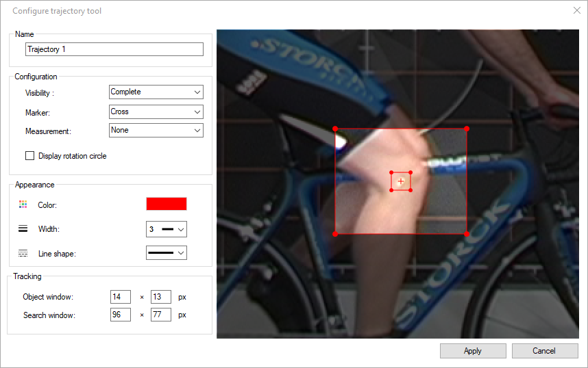
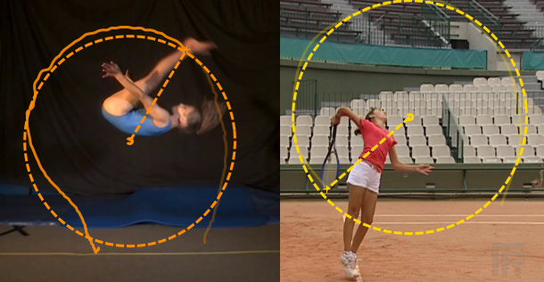
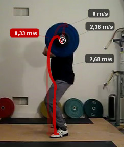

Tracking point trajectories¶
Introduction¶
To track the trajectory of a single point or body joint visible on the image follow these steps:
Right click the object to track and choose .
Move the video forward using the Next frame button, the mouse wheel or the Play button.
Adjust the point position as necessary during the path creation.
To finish tracking, right click inside the tracking window and choose .
Tracking is a semi-automatic process. A candidate point location is computed automatically but can be adjusted manually at any time.
While tracking is in progress two rectangles will be visible around the object being tracked. The inner rectangle is the object window, the outter rectangle is the search window.
When the automated tracking fails, correct the point location by dragging the search window. Drag it until the cross at the center of the tracking tool is at the correct location. When tracking resumes, it will use this new point as reference.
Tip
When the trajectory object is not in path edition mode the trajectory is interactive: clicking on any point of the trajectory will move the video to the corresponding frame.
Trajectory options¶
Right click the trajectory object and choose to bring the trajectory settings dialog.
Visibility¶
The trajectory visibility can be set to one of the following modes:
Complete (A): displays the whole trajectory.
One second (B): displays one second worth of trajectory points.
Label (C): displays the name of the trajectory in a label.
Marker¶
The point at the trajectory position of the current frame can be displayed in one of the following shapes:
Cross
Circle
Target
Measurement¶
This option enables the display of a measurement label following the current point on the trajectory. The options are kinematics quantities computed from the trajectory points. This option is also directly available via the trajectory context menu under .
The following options are available:
None
Name
Position
Total distance
Total horizontal displacement
Total vertical displacement
Speed
Horizontal velocity
Vertical velocity
Acceleration
Horizontal acceleration
Vertical acceleration
Note
To display kinematics measurements in real world units you must first calibrate the coordinate space. If the video is natively in slow motion you must also calibrate the time scale.
Display rotation circle¶
This option uses the points of the trajectory to compute the best-fit circle of the trajectory. This is a circle that minimizes the error of each point relatively to a virtual perfect circle.
This can be used to visualize the pseudo-center of a rotary motion.
Tracking¶
The size of the object and search windows can be modified by dragging the corners of the windows in the preview panel or by changing the values.
The object window should be as small as possible around the point of interest to avoid tracking interferences. The search window should be large enough to contain the position of the point in the next frame, but small enough to avoid interferences between multiple markers.
Key images¶
When the section of time covered by the trajectory contains key images they are displayed as small labels attached to the trajectory point at that time.
